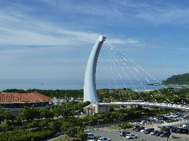
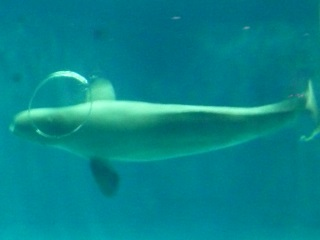
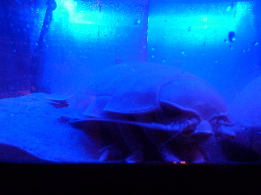
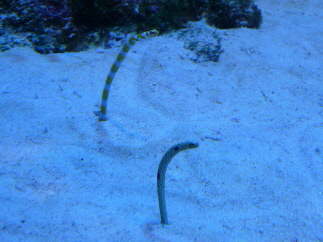
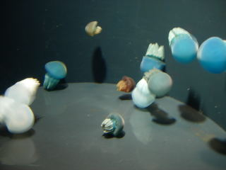

アクアスでシロイルカのマジックリングを見ました。
2013/07/20
ちょっと遠くまで観光に行きました。
島根県立しまね海洋館アクアスです。

天気が良くて暑かったー。

で、これがマジックリングとゆうやつです。
シロイルカ賢いですね。
係りの人がお願いすると、バブルリングもマジックリングもドンドン出してくれました。

今は特別展「妖海屋敷」がやってて、こんな怖そうなのがいました。

これ、人気みたいです。
確かに小さくて、愛嬌があって可愛い。
チンアナゴとニシキアナゴです。
お土産物屋さんでは、このアナゴのDVDが流れてたり、グッズが色々販売されていました。
私もグッズを買いました。
アクアスにペンギンを見に行きました。
2010/05/16
ペンギン館が出来てからまだ行ってなかったので、見に行きました。

ペンギンのよちよき歩きが見たかったんですが、同じ場所でじっとしていたので見れませんでした。
水槽の下からペンギンが泳いでる姿が見れました。大きい体が素早く動くので迫力がありました。これいいですね。
今日は子供よりも大人のお客さんが多かったなって思いました。デートの人も多かったです。
水族館ってちょっと癒されていいですね。
上の写真のクラゲとか、ポンポン跳ねながら泳いでいてとっても可愛かったです。
アクアスは今シロイルカの新しい施設を作っているので、今度はそれが完成したらまた見に行きたいなと思いました。